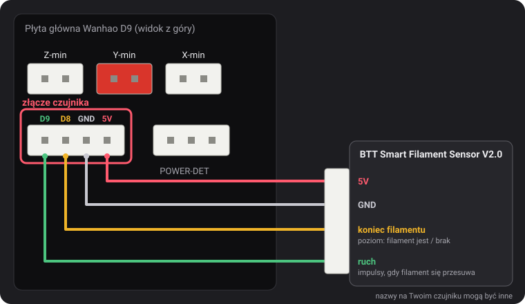
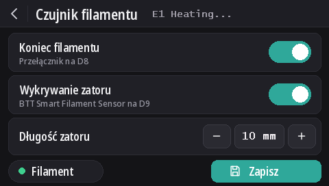

Czujniki filamentu
Od v2.0.5 ten firmware obsługuje dwa rodzaje czujników: czujnik końca filamentu Wanhao oraz BTT Smart Filament Sensor V2.0, który wykrywa też, gdy filament przestaje się przesuwać (splątana szpula, zator, filament zmielony przez ekstruder). Wykrywanie końca filamentu jest domyślnie włączone w każdym modelu, a wykrywanie zatorów jest wyłączone.
Złącze czujnika

4-pinowe złącze na lewo od POWER-DET, pod złączami krańcówek, ma piny D9, D8, GND i 5V, w tej kolejności. Nazwy pinów pochodzą ze schematu połączeń Wanhao, który znalazł i udostępnił dustovich na Discordzie; na spodzie płyty te same cztery piny są opisane jako CTRL, BTN, GND i VCC.
- D8 to wejście końca filamentu, które odczytuje firmware Wanhao.
- D9 nie jest używany przez firmware Wanhao: nasze wersje odczytują na nim sygnał ruchu z czujnika BTT.
Na ekranie
Z DGUS Reloaded 2.0 na ekranie (firmware v2.0.9 lub nowszy): Ustawienia → Filament → Czujnik filamentu.
- Koniec filamentu włącza lub wyłącza całe wykrywanie, jak
M412 S1/M412 S0. - Wykrywanie zatoru włącza wykrywanie zatorów z długością ustawioną poniżej albo je wyłącza (
L0). - Długość zatoru: − i + zmieniają ją o 1 mm; dotknij liczby, aby ją wpisać.
- Kropka Filament jest zielona, gdy czujnik końca filamentu wykrywa filament, i czerwona, gdy go nie wykrywa.
- Zmiany działają od razu. Zapisz je zapamiętuje, jak
M500. Strzałka wstecz wychodzi bez zapisywania: przy następnym uruchomieniu wracają zapisane ustawienia.

Polecenia M412
Wszystko ustawia się przez USB z terminala szeregowego (Pronterface, terminal slicera lub OctoPrinta,
250000 bodów). Parametry można łączyć w jednym poleceniu, na przykład M412 S1 L10.
| Polecenie | Co robi |
|---|---|
M412 | Pokazuje stan, na przykład Filament runout ON ; Distance 5.00mm ; Motion distance 0.00mm. |
M412 S1 | Włącza wykrywanie: czujnik końca filamentu, a także wykrywanie zatorów, jeśli długość zatoru nie wynosi 0. |
M412 S0 | Wyłącza całe wykrywanie, końca filamentu i zatorów. |
M412 D5 | Gdy czujnik nie wykrywa już filamentu, drukuje jeszcze 5 mm przed pauzą, aby zużyć filament pozostały między czujnikiem a dyszą. Domyślnie 5 mm. |
M412 L10 | Włącza wykrywanie zatorów (tylko czujnik BTT): pauzuje, gdy przez ekstruder przejdzie 10 mm filamentu, a kółko czujnika się nie poruszy. |
M412 L0 | Wyłącza wykrywanie zatorów i nie zmienia ustawienia czujnika końca filamentu. To ustawienie domyślne. |
M500 | Zapisuje ustawienia. Bez tego zmiana przepada po wyłączeniu drukarki. |
M119 | Linia filament pokazuje TRIGGERED, gdy filament jest załadowany, i open, gdy go nie ma. |
M412 L0 oraz samo L pochodzą z naszej zmiany w Marlinie
(MarlinFirmware/Marlin#28585), wbudowanej w ten firmware. W Marlinie bez tej zmiany samo L
jest ignorowane, a L0 od razu pauzuje wydruk jak przy zatorze.
Czujnik końca filamentu Wanhao
Informuje firmware, czy filament jest obecny. Gdy filamentu zabraknie, wydruk pauzuje po kolejnych 5 mm filamentu, a ekran rozpoczyna wymianę filamentu.
Od v2.0.8 jest domyślnie włączony w każdym modelu. Gdy do D8 nic nie jest podłączone, rezystor podciągający na płycie utrzymuje pin na 5 V, co jest odczytywane jako „filament obecny”: wykrywanie nigdy wtedy nie zadziała, więc może pozostać włączone niezależnie od tego, czy czujnik jest zamontowany. Podłącz czujnik końca filamentu do D8, a od razu zacznie działać.
- Wykrywanie zatorów pozostaje wyłączone (
L0): ten czujnik nie widzi ruchu filamentu. - Aby wyłączyć czujnik:
M412 S0, potemM500. - Ustawienia zapisane przez wcześniejsze wydanie zachowują swój stan (włączony lub wyłączony). Aby go włączyć:
M412 S1, potemM500, albo przywróć ustawienia domyślne (M502, potemM500, co kasuje też offset Z czujnika i siatkę stołu).
BTT Smart Filament Sensor V2.0
Ten czujnik ma dwa wyjścia, a firmware odczytuje je na różne sposoby:
- Czujnik końca filamentu (do D8) podaje poziom: 5 V, dopóki filament jest, 0 V, gdy go zabraknie.
- Wyjście ruchu (do D9) pochodzi z małego kółka, które obraca przesuwający się filament. Co kilka milimetrów filamentu wyjście przełącza się między 0 V a 5 V. Firmware obserwuje tylko te zmiany: jeśli ekstruder przepchnie długość zatoru bez ani jednej zmiany, filament nie nadąża (splątana szpula, zator, filament zmielony przez ekstruder) i wydruk pauzuje. Czujnik końca filamentu tego nie wykryje: podczas zatoru filament wciąż jest na miejscu.
Podłączenie
5V do 5V, GND do GND, sygnał końca filamentu do D8, a sygnał ruchu do D9. Nazwy nadrukowane na przewodzie czujnika mogą być inne.
Włączanie
M412 S1 L10
M500Jeśli wydruki pauzują bez powodu, zwiększ długość zatoru: M412 L15, potem M500. Aby zostawić tylko
czujnik końca filamentu: M412 L0, potem M500.
Sprawdzanie
M412: Filament runout ON ; Distance 5.00mm ; Motion distance 10.00mm.M119z załadowanym filamentem: filament: TRIGGERED. Jeśli ta linia zmienia się, gdy przepychasz filament ręką, a nie gdy go wkładasz lub wyjmujesz, dwa przewody sygnałowe są zamienione: zamień D8 z D9.
L0 nigdy),
ale jeszcze nie z samym czujnikiem BTT. Jeśli czujnik jest odczytywany odwrotnie (open z załadowanym
filamentem), daj nam znać na Discordzie.Aktualizacja z v2.0.5 lub v2.0.6
Te wydania nie pozwalały wyłączyć wykrywania zatorów, więc używały długości zatoru tak dużej, by nigdy nie została osiągnięta: 100 m w
v2.0.5 (w praktyce za mało: około jednej trzeciej szpuli 1 kg, po czym pozostawiona włączona drukarka mogła zapauzować bez powodu) i
10 km w v2.0.6. Przy uruchomieniu drukarki v2.0.7 wczytuje te dwie wartości jako L0. Rzeczywista długość ustawiona
dla czujnika BTT, taka jak L10, zostaje zachowana. Przy aktualizacji z v2.0.4 lub starszej wczytywana jest odległość końca filamentu 5 mm
zamiast 0 zapisanego przez tamte wersje.